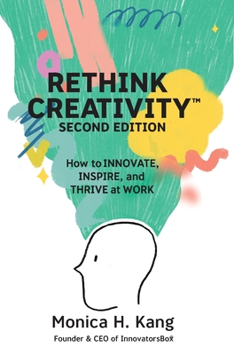

Rethink Creativity
- Read on 2022-07-22
- Rating: ️️️️️
- Format: 🎧 (4 hours 1 minute)
This was a book for a book club through work. Plainly put: this was fine. The author, Monica Kang has some good points, and it's clearly well-researched and thought-out, but it didn't feel like anything very new to me: Try something different. Don't be complacent. Creativity takes practice. People can be creative in ways you don't expect. Constraints can help. Stick to it. Kang has a variety of ideas to help kick things into gear if you feel stuck, and resources on her site that would help as well. There were a number of things Kang mentioned that feel commonplace in my workplace - and maybe those points would have been more revolutionary to me if I didn't work for a creativity-focused company. The physical book is, admittedly, well designed - with nice illustrations, pull quotes, and places for notes. The book club discussion progressed well enough. Overall, people seemed to like the book, and find value in what Kang put together.
If you choose to listen to this book, it has to be among the strangest audio books I've ever listened to. It has so many sound effects, I was really thrown off. The sound effects made the book feel like one of those YouTube videos where they're trying to pitch something in a few minutes, accompanied by some of those "live-drawn" graphics, and your mind is supposed to be blown. Except, instead of two minutes, it was 4+ hours of that, and my mind wasn't blown. Sad trombones, fake applause, bells, motors, ticking clocks, and so many other sound effects I couldn't keep track of them all. Furthermore, the book is read by the author - and with very few exceptions, I contend that voice actors should be used for that job, and not the author. Maybe I would have liked the book more if the audio production was more to my taste.
- Prior: Akata Witch
- Next: The Beatles from A to Zed